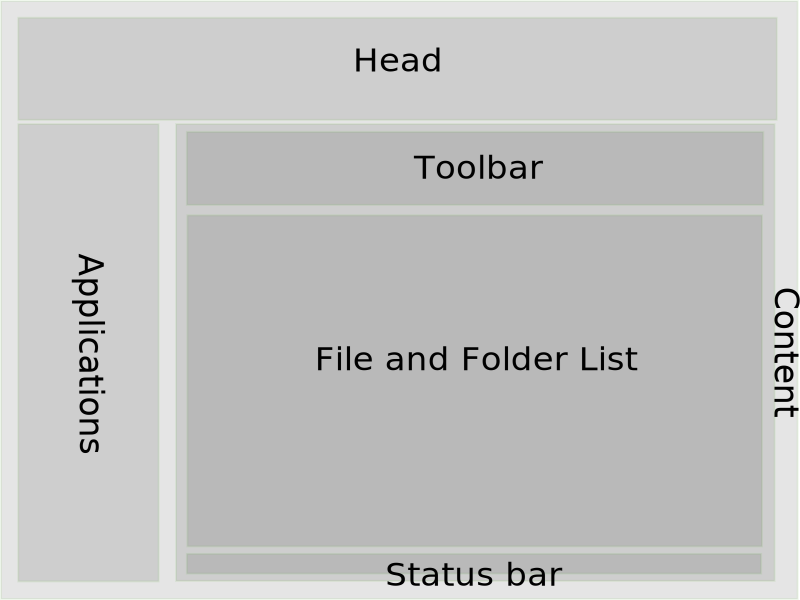

... to the web interface.
Prerequisites
... or the author says requirements:
-
Secure connection (HTTPS)
- is required to secure your data (files, account password)
and to enable cookies ...
- Cookies
- are required for settings (language selection, ...),
bookmarks, clipboard (copy, cut, paste), folder history,...
- JavaScript
- enables all features and without JavaScript nothing works in the web interface.
Of course, the latest browser version is required, so that everything works well.
Navigation

The web interface has 3 main parts:
- head area at the top with some useful information,
- application bar at the left side,
- content area with a toolbar, the file and folder list, and
an optional status bar.
Head area
- The head area shows in most cases your account name and at the right date and time information.
- There is also a language switch, but not all dialogs are translated to the offered languages.
- The header can be hidden to save space for the folder list.
Applications
- The available applications depend on your local installation and can change after a file or folder selection.
- To save space you can collapse the application bar to an icon-only view or to hide it.
- And a settings button to open a settings dialog for some customizations is also available on the applications or side bar.
- The toolbar changes it's content depending on the current file or folder selection.
- At the left side of the toolbar the quick navigation helps you to navigation back to upper folders.
- Right of the quick navigation are buttons to create files and folders, uploading files and folders, and so on.
- If no file or folder is selected, you'll find a bookmarks menu and a autorefresh menu .
- The filter box at the right site of the toolbar allows you to hide all files and folders in the list that do not match your input.
A click on the cross button (appears if a filter input exists) behind the input field removes the filter.
Some characters in this filter box have a special meaning (
.*+?^$()[]{}\), because this box supports regular expressions6.
File and folder list
- You can customize the file and folder list.
- The tooltip of the File/Folder column shows a statistics with a file and folder count.
- The tooltip of the Size column shows a summary of used file space of the current folder (excluding folders).
- All size values have a tooltip with other size units
like B (bytes), KB (kilo bytes=B×1024), MB (mega bytes=B×10242), GB (giga bytes: B×10243),
TB (tera bytes=B×10244), PB (peta bytes=B×10245).
Not every button has a label and therefore there are tooltips. Place the mouse cursor over it or put the
keyboard focus on it and wait a couple of seconds to get a tooltip. Some tooltips have
a help button to get a context help.
Dialogs and messages
-
All "dangerous" actions like delete ask for confirmation with a dialog.
Some dialogs can be supressed for future actions by deselecting "🗹 Always ask for confirmation.".
To get the confirmation dialog back, use the Settings dialog (tab "Dialogs") in the applications bar.
-
After a file or folder action (upload, delete, rename, and so on) you will get a message with information of success or failure.
This information will be displayed in the top center of the screen (over head and toolbar).
After some seconds, this message box disappears. You can also click with the mouse on the message box to hide it.
Drag and drop support (Drag&Drop, or D&D)
Drag and drop makes it easier
- to upload files and folders selected from your favorite file manager (Windows Explorer, Mac Finder, Xfe, Nautilus, Konqueror, ...),
- to move or copy (hold ⇧ Shift while dragging) your files and folders from current to a subfolder or to the upper folder,
- or to customize the file and folder list.
The file and folder list has a context menu (right mouse click on a file or folder row) with some standard file actions and
a lot of additional features (depending on your local installation).
If you have nothing selected in the file list, the right clicked file or folder will be taken for the context action.
The table header has it's own context menu to change sort order or to show or hide table columns.
And if you need the web browser context menu instead of the file and folder list context menu you have to use the right double click
not of all web browsers supported
.
Keyboard support
- Tabbing with (⇧ Shift+) ↹ Tab key is implemented and can be used to reach all
important things like buttons, actions, etc.
- There are default shortcuts1
to reach file actions and some web interface elements like file and folder list, toolbar, and application bar.
- How to use shortcuts or which modifiers are needed depend on your web browser2 and operating system, e.g.:
- Mozilla Firefox: on Windows, FreeBSD, and Linux:
Alt+⇧ Shift,
on Mac: Ctrl+⌥ Opt
- Google Chrome: on Windows, FreeBSD, and Linux: Alt
and sometimes ⇧ Shift too,
on Mac: Ctrl+⌥ Opt
- To get a full list of available shortcuts use shortcut 0.
- In the file list you can use
- the cursor keys ↑, ↓,
▲ Page up, ▼ Page down,
⇤ Home, and ⇥ End for navigation too,
- the Space key to select files,
- the ↵ Enter key to change the folder or download a file,
- or the Del key to delete files and folders.
{kind=link}